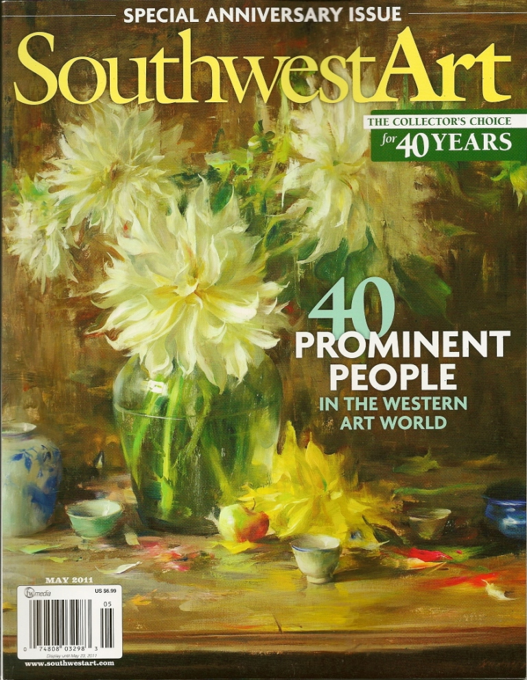
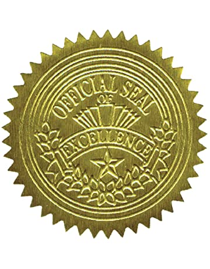
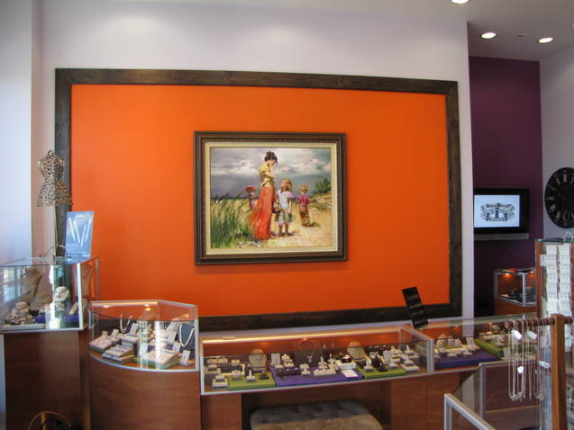
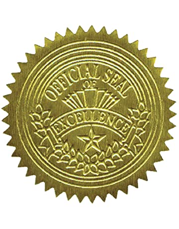
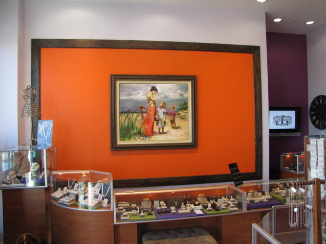
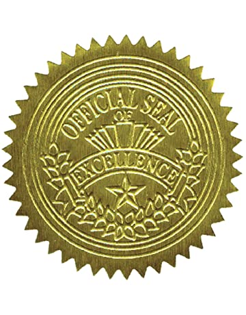
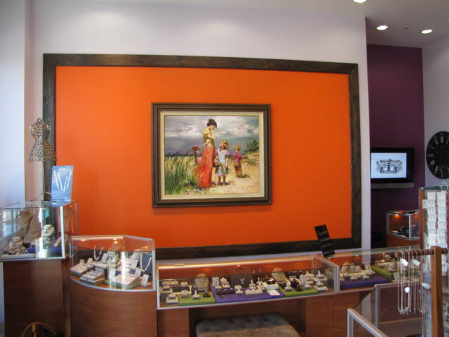

J Watson Fine Art is located in sunny Valencia, California. We assist collectors locally, nationally
and internationally with their art collections. We are a Premier Dealer with AskArt and a Member of the Santa
Clarita Valley Chamber of Commerce.
We offer artwork by top artists in Western Art, Wildlife Art, Romantic Art and Impressionist Street
Scenes and Landscapes including Pino, Morgan Weistling, G. Harvey, John Seerey-Lester, Dimitri Danish, Susan von
Borstel, Stephen Lyman, M & I Garmash, Carl Brenders, Vidan, and many other award-winning artists.
We strive to provide collectors with great art, excellent customer service and high quality framing.
We value our relationships with collectors and try to treat collectors the way we would like to be
treated. You are guaranteed to be 100% satisfied with any art acquisition from J Watson Fine Art. We stand
behind the quality and authenticity of our artwork, and we want to have happy customers for life.
We enjoy helping collectors find the right "fit" to add to their art collections. Bringing joy,
beauty and art to our collector's homes and offices and supporting collectors and artists is our pleasure.
We also accept select consignments of artwork and can assist collectors with the marketing and sale
of artwork in a private manner, facilitating the transaction. Call us at 661 476-7558 or e-mail
info@fineart.com and let us know how we can help with your art collection.
Joanne Watson
Owner, Fine Art
Mailing Address
16760 Stagg Suite 204
Van Nuys, CA 91406
Phone Number:
661-476-7558
Email: jwatsonfineart@yahoo.com



J Watson Fine Art in
Southwest Art magazine
Pino Art at
Manya Jewelers
from J Watson Fine Art
"We love the new painting. Pino is a great artist. Thanks for your help!"--Manya


 


